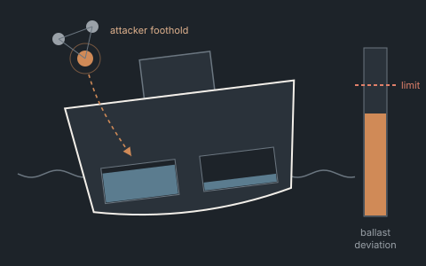

How this thinking has been applied.
Published research, live models and anonymized illustrative composites drawn from cross-industry experience. No confidential data, client-owned figures or current-employer material appears on this site.

A 10% rise in demand produced a 22% overshoot in bed stock.
Two coupled stocks with different delays don't scale linearly — they overshoot.
Read the case →
Detection delay — not the vulnerability list — decides whether an attack becomes a physical loss.
A live model of the race between attacker propagation and the defender's response.
Read the case →
Changing the buffer structure so a wrong price forecast costs less.
Capacity decisions tied to short-term price signals were set up to over-commit before a downturn.
Read the case →
The order swings weren't a forecasting failure. They were built into the order policy.
Separating real demand from the artifacts of order-batching and lead-time perception.
Read the case →
Pricing geographic concentration risk into the sourcing decision.
Modest diversification premiums were, in expectation, cheaper than the risk they replaced.
Read the case →Cases marked “Illustrative” are composites written to illustrate a way of thinking, not verbatim accounts of specific engagements. Figures are directional, not disclosed client data. If you want to sanity-check this approach against your own situation, that’s what the first conversation is for.